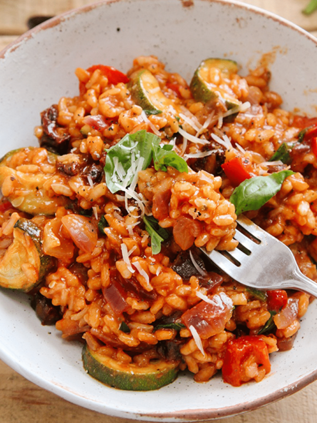

Home
Risotto

Description
Vegetable risotto is a creamy, flavorful dish made by slowly cooking rice with vegetable broth and seasonal vegetables. It's a comforting and versatile meal that's naturally vegetarian and packed with freshness.
Perfect as a main course or a side dish, this risotto highlights the rich, delicate flavors of the ingredients while maintaining a satisfying, hearty texture.
Ingredients
- 1 cup Arborio rice
- 4 cups vegetable broth, kept warm
- 2 tablespoons olive oil
- 1 small onion, finely chopped
- 2 cloves garlic, minced
- 1 cup diced carrots
- 1 cup peas
- 1 cup diced zucchini
- 1/2 cup grated Parmesan cheese (or vegetarian alternative)
- 2 tablespoons butter
- Salt and pepper, to taste
- Fresh parsley, for garnish
Steps
- In a large pan, heat the olive oil over medium heat. Add the onion and garlic and cook until translucent.
- Add the carrots, zucchini, and peas. Sauté for 3–4 minutes.
- Stir in the Arborio rice and cook for 1–2 minutes until lightly toasted.
- Begin adding the warm vegetable broth one ladle at a time, stirring continuously. Wait until the broth is mostly absorbed before adding the next ladle.
- Continue this process until the rice is creamy and cooked al dente, about 18–20 minutes.
- Stir in the butter and Parmesan cheese. Season with salt and pepper to taste.
- Remove from heat, garnish with fresh parsley, and serve immediately.